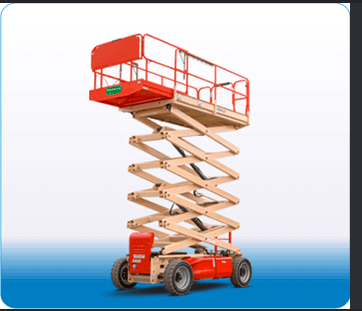

Revalidación de operador
Para quienes ya tienen experiencia con el equipo. Los requisitos, la evaluación y las condiciones de certificación se definen en coordinación con TRAINPRO por WhatsApp.
CAPACITACIÓN PARA OPERADORES
Elevación tipo tijera
¿Ya operas una plataforma tipo tijera? Consulta por revalidación y comparte tu experiencia y los datos del equipo.
Quiero información de este curso
SEGÚN TU EXPERIENCIA
Para quienes ya tienen experiencia con el equipo. Los requisitos, la evaluación y las condiciones de certificación se definen en coordinación con TRAINPRO por WhatsApp.
La disponibilidad del equipo, el lugar, la duración y las condiciones de la práctica se definen en coordinación con TRAINPRO por WhatsApp.
CONVERSEMOS SOBRE TU CAPACITACIÓN
Al consultarnos, comparte los datos de la plataforma que utilizas y la cantidad de participantes.
Solicita el temario, la duración, los requisitos y las condiciones de evaluación y certificación.